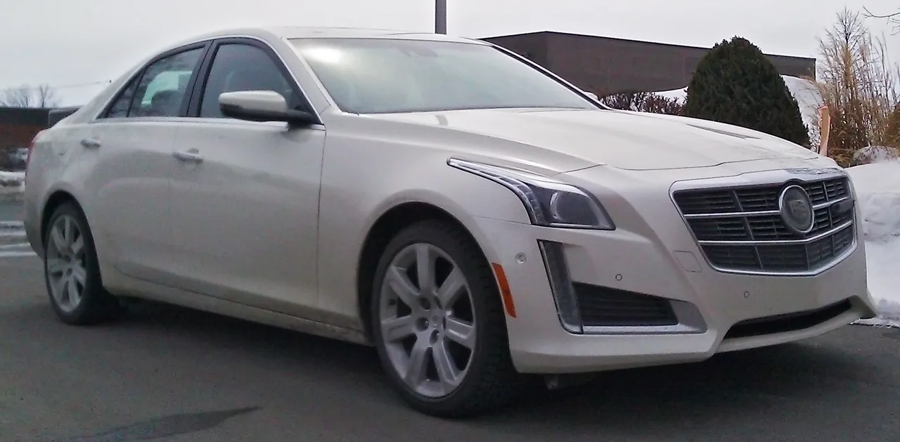
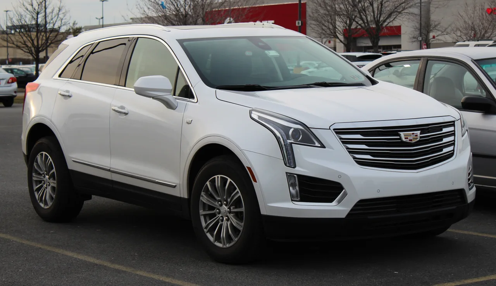
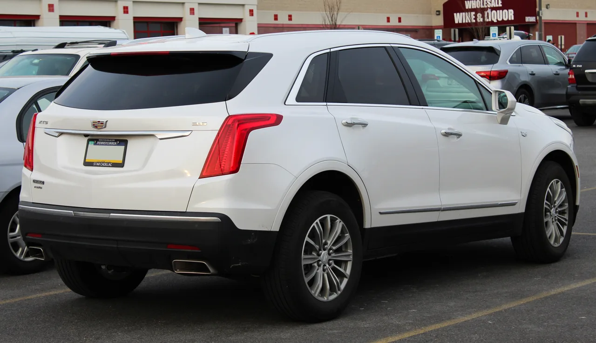

▲ 쉐보레 카마로. GM 3.6리터 V6는 카마로의 볼륨 트림 엔진으로 오랫동안 자리를 지켜왔다
화려한 스펙 경쟁 속에서 잘 언급되지 않지만, GM의 3.6리터 V6 엔진은 지난 20여 년간 미국차 라인업 상당 부분을 지탱해온 숨은 주역입니다. 2004년 첫 등장 이후 여러 세대를 거치며 꾸준히 개선됐고, 지금도 카마로와 캐딜락 라인업 곳곳에서 현역으로 뛰고 있습니다. "불릿프루프(방탄)"라는 별명이 붙을 만큼 신뢰성으로 정평이 난 이 엔진의 세대별 진화를 정리했습니다.
1. 2004년 LY7 — 모든 것의 시작
이야기는 2004년, 캐딜락 CTS에 탑재된 LY7 엔진에서 시작됩니다. 쿼드캠(DOHC) 레이아웃에 가변 밸브 타이밍, 24밸브 구성을 갖춘 이 엔진은 255마력과 252lb-ft의 토크를 냈습니다. 당시 기준으로는 준수한 성능이었지만, 초기형답게 결점도 있었습니다. 타이밍체인이 조기에 마모·늘어나는 문제와 과도한 오일 소모가 대표적이었습니다. 이후 2008년 등장한 LLT는 가솔린 직분사(GDI) 기술을 더해 302마력까지 출력을 끌어올렸지만, 직분사 특유의 흡기밸브 카본 침적 문제가 새로 따라붙었습니다.

▲ 캐딜락 CTS. 2004년 LY7을 시작으로 이 엔진 패밀리의 첫 탑재 모델이었으며, 이후 세대에도 꾸준히 3.6리터 V6를 이어받았다
2. 2012년 LFX — 고질병을 고치다
전환점은 2012년 LFX였습니다. 타이밍체인과 텐셔너 시스템을 전면 재설계해 초기형의 고질적인 체인 마모 문제를 해결했고, 내부 마찰 저항도 줄였습니다. 카마로 적용 기준 출력은 최대 323마력까지 올라갔습니다. 이 개선 이후로 엔진에 대한 평가가 확연히 달라졌습니다. "불릿프루프"라는 별명이 본격적으로 붙기 시작한 것도 이 시점부터입니다. 업계에서는 지금도 수많은 운전자가 매일 이 엔진에 의존해 차를 몰고 있다고 평가할 만큼, LFX 이후 세대는 장기 내구성 측면에서 높은 신뢰를 얻었습니다.
| 세대(연식) | 출력 | 특징 |
|---|---|---|
| LY7(2004) | 255마력 / 252lb-ft | 쿼드캠 24밸브, 초기형 |
| LLT(2008) | 302마력 | 직분사(GDI) 도입 |
| LFX(2012) | 최대 323마력 | 타이밍체인 문제 해결 |
| LGX(2016) | 최대 335마력 | 완전 새 설계, 배기매니폴드 일체화 |
| LF4(2016, 트윈터보) | 464마력 | 티타늄 부품, 액체식 차저 쿨러 |

▲ 캐딜락 XT5. 트렁크 데크에 선명하게 새겨진 "3.6" 배지가 이 엔진이 SUV 라인업까지 폭넓게 쓰였음을 보여준다
3. 2016년 LGX — 클린시트 재설계
2016년 등장한 LGX는 이전 세대와 거의 공유하는 부품이 없는 완전히 새로운 설계였습니다. 알루미늄 블록, 피스톤, 커넥팅로드, 크랭크샤프트, 냉각·오일 시스템까지 전부 다시 설계됐고, 배기 매니폴드를 실린더헤드에 통합해 열 관리 효율을 높였습니다. 카마로 적용 기준 출력은 335마력까지 올라갔습니다. 캐딜락 ATS·CTS·CT6에 먼저 탑재된 뒤, XT5·XT6 같은 SUV 라인업과 뷰익 라크로스까지 확대 적용되며 GM 브랜드 전반의 표준 V6로 자리 잡았습니다. 같은 해 공개된 트윈터보 버전 LF4는 티타늄 내부 부품과 액체식 차저 쿨러를 더해 464마력이라는 고성능 영역까지 진출했습니다.

▲ XT5 후면. LGX 엔진은 세단뿐 아니라 크로스오버 SUV까지 아우르며 GM 브랜드의 표준 V6로 자리 잡았다
4. 정리 — 조용히 저무는 마지막 세대
터보 4기통과 전동화 파워트레인이 대세로 자리 잡으면서, 이 3.6리터 V6 계열도 서서히 라인업에서 물러나는 추세입니다. 하지만 20년 넘게 이어진 진화 과정에서 초기형의 결함을 스스로 고쳐내고 "불릿프루프"라는 평판을 얻어낸 것은, 화려하진 않아도 꾸준함으로 신뢰를 쌓아온 엔진의 성공 사례로 기록될 만합니다. 중고로 이 엔진을 탑재한 카마로나 캐딜락을 고려 중이라면, 2012년 LFX 이후 세대를 기준으로 알아보는 것이 초기형의 고질적 문제를 피하는 요령입니다.